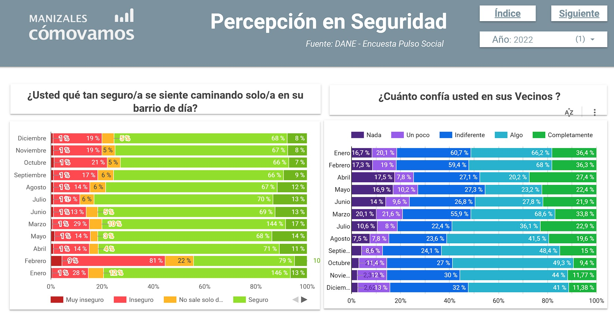
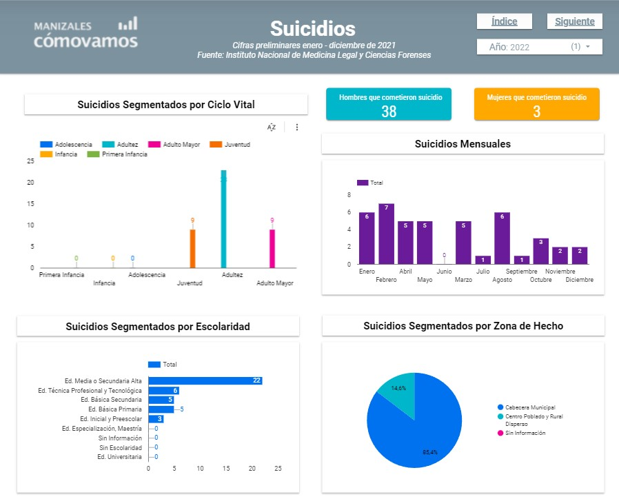

Construcción de Informes - DataStudio

Selección de indicadores y fuentes de información
En primera instancia se realizó un análisis de los sectores que podrían ser un punto de referencia mediante el cual medir la calidad de vida en el municipio, entre los cuales se destaca la selección del mercado laboral, seguridad, salud y educación.
Apartir de dichos sectores se procedio a identificar las principales fuentes de información y los principales indicadores de dichos sectores, fue relevante la implementación de datos duros a la hora de tener una mirada objetiva del panorama, sin embargo tambien fue relevante apreciar los resultados subjetivos. Entre las fuentes de información utilizadas se encuentra el Departamento Administrativo Nacional de Estadística(DANE), el Instituto Nacional de Medicina Legal y Ciencias Forenses y el Ministerío de Educación.
Base de datos y visualización
Posteriormente se procedió con la creación de una base de datos en Google Sheets la cual fuese compatible con Google DataStudio, migrando a esta la información recopilada de datos duros y de percepción. Con el objetivo de crear un informe con herramientas que facilitan su navegación, y que presenta la información de una forma organizada, desagregando los resultados por diferentes componentes, permitiendo de esta forma observar un ejemplo más amplio, que pueda ser utilizado para identificar que en sectores la calidad de vida de los manizaleños se encuentra mejor posicionada, y en qué sectores hay trabajo por hacer.
